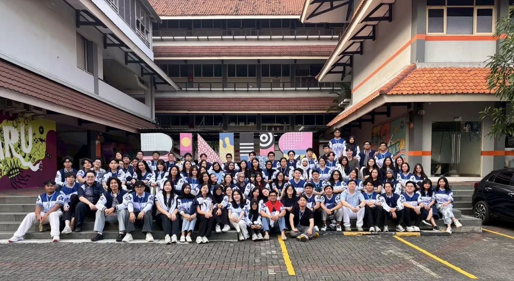
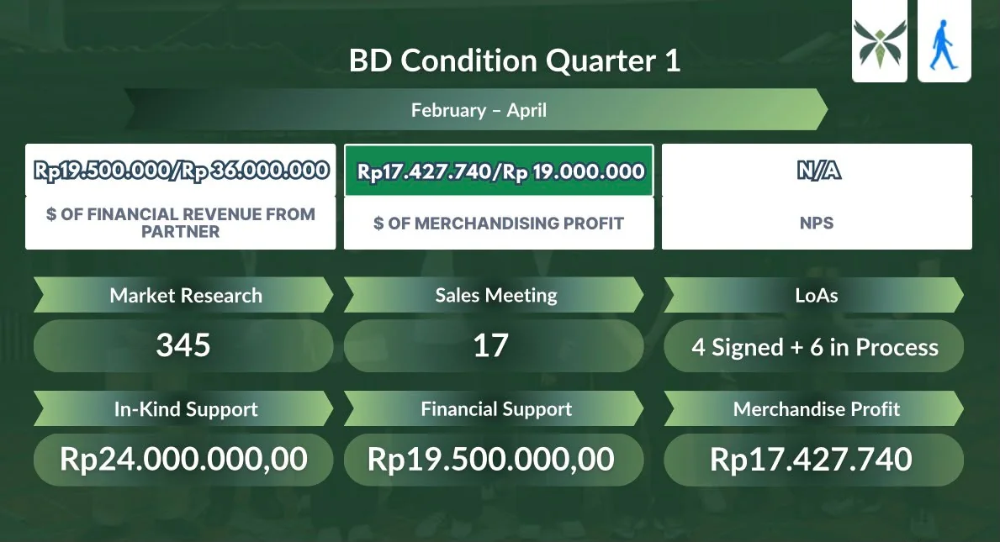
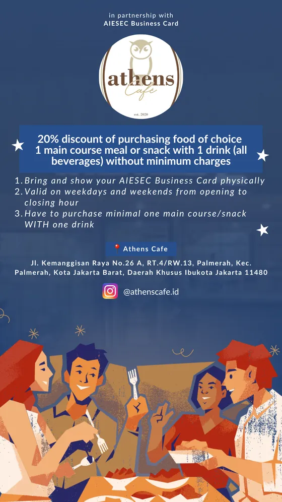
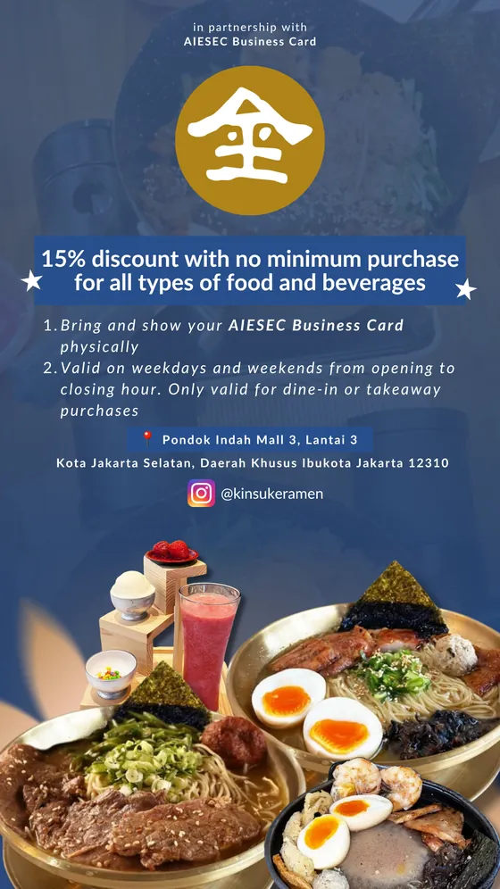

Feb 2026 to Feb 2027
AIESEC in BINUS
Team Leader, Strategic Support (Business Development)
Strategic Support is the sub-function of Business Development responsible for generating revenue and creating member benefits through partnerships.
- Lead and manage the Strategic Support team, setting targets and delegating tasks.
- Generate revenue by creating and selling merchandise across the AIESEC in Indonesia network.
- Build AIESEC Business Card (ABC) partnerships with local cafés, restaurants, and businesses that give members exclusive discounts to increase member satisfaction.
- Create promotional content for ABC partners to boost usage among members.



